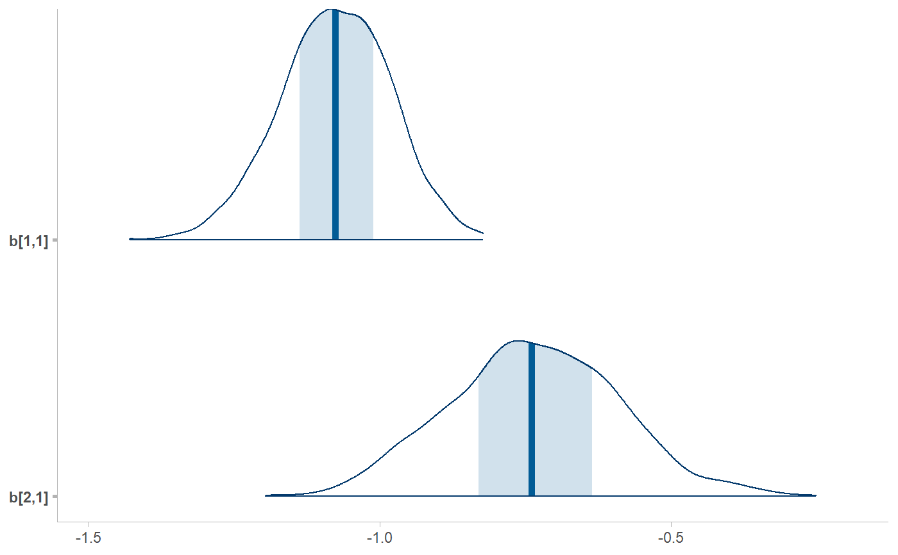
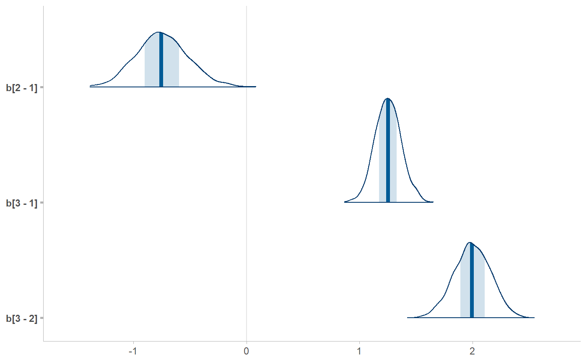

R/ungather_draws.R, R/unspread_draws.R
unspread_draws.RdInverse operations of spread_draws() and gather_draws(), giving
results that look like tidy_draws().
ungather_draws( data, ..., variable = ".variable", value = ".value", draw_indices = c(".chain", ".iteration", ".draw"), drop_indices = FALSE ) unspread_draws( data, ..., draw_indices = c(".chain", ".iteration", ".draw"), drop_indices = FALSE )
| data | A tidy data frame of draws, such as one output by |
|---|---|
| ... | Expressions in the form of
|
| variable | The name of the column in |
| value | The name of the column in |
| draw_indices | Character vector of column names in |
| drop_indices | Drop the columns specified by |
A data frame.
These functions take symbolic specifications of variable names and dimensions in the same format as
spread_draws() and gather_draws() and invert the tidy data frame back into
a data frame whose column names are variables with dimensions in them.
library(dplyr) data(RankCorr, package = "tidybayes") # We can use unspread_draws to allow us to manipulate draws with tidybayes # and then transform the draws into a form we can use with packages like bayesplot. # Here we subset b[i,j] to just values of i in 1:2 and j == 1, then plot with bayesplot RankCorr %>% spread_draws(b[i,j]) %>% filter(i %in% 1:2, j == 1) %>% unspread_draws(b[i,j], drop_indices = TRUE) %>% bayesplot::mcmc_areas()# As another example, we could use compare_levels to plot all pairwise comparisons # of b[1,j] for j in 1:3 RankCorr %>% spread_draws(b[i,j]) %>% filter(i == 1, j %in% 1:3) %>% compare_levels(b, by = j) %>% unspread_draws(b[j], drop_indices = TRUE) %>% bayesplot::mcmc_areas()